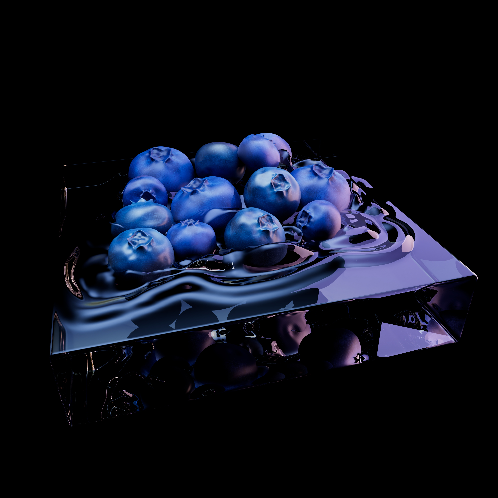
Blueberry in Water Scene — Maya
A still-life environment created in Autodesk Maya, focused on realistic materials, lighting, and fluid presentation. This piece explores surface detail, transparency, and composition through a simple organic subject.


Bookshelf Scene — Maya
An interior scene built in Autodesk Maya featuring a large bookshelf and lit candles. This project focuses on environmental storytelling, warm lighting, and arranging detailed props to create atmosphere.
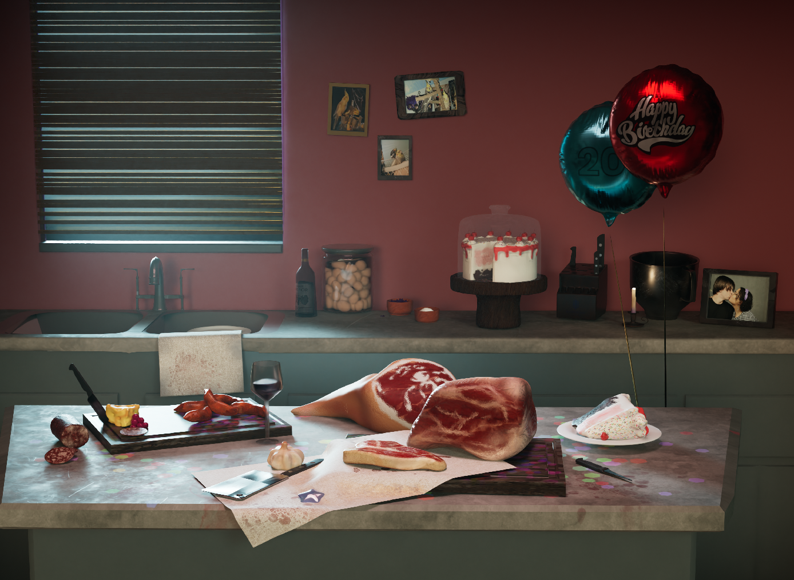

Meat Scene — Maya
A 3D scene created in Autodesk Maya centered around a meat-focused composition with attention to lighting, materials, and presentation. This piece explores food modeling, texture detail, and scene arrangement to create a strong visual impact.


Simpsons AI Toon Render
A stylized toon-rendered scene inspired by The Simpsons, created with an AI-assisted visual approach. This piece experiments with exaggerated color, cartoon rendering, and environmental mood.


Bee Hive Study — Toon Shader Pipeline
This render explores stylized AI toon shading in Autodesk Maya, featuring a bee resting within a honeycomb structure. The project includes process breakdowns, comparing initial lighting and texture passes with the final rendered output.
Pizza GLB Model
A pizza prop modeled and exported as a GLB, designed for real-time viewing and asset presentation. This piece focuses on stylized food design, appealing shape language, and readable texture work.
Steak GLB Model
A standalone steak asset exported as a GLB for real-time use. This model highlights food sculpting, texture detail, and presentation as an individual game-ready prop.


Miscellaneous Prop Renders
A collection of standalone prop renders including a butcher knife, cheese, bone marrow, salami, candle, wine bottle, and knife block. These studies focus on material definition, object variety, and individual prop presentation.
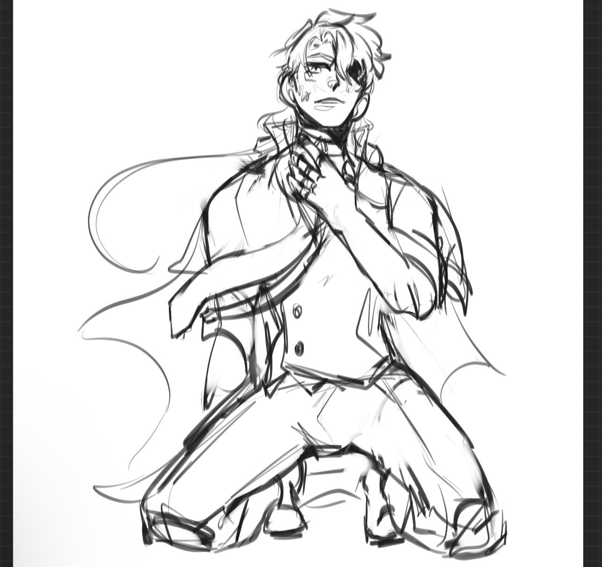
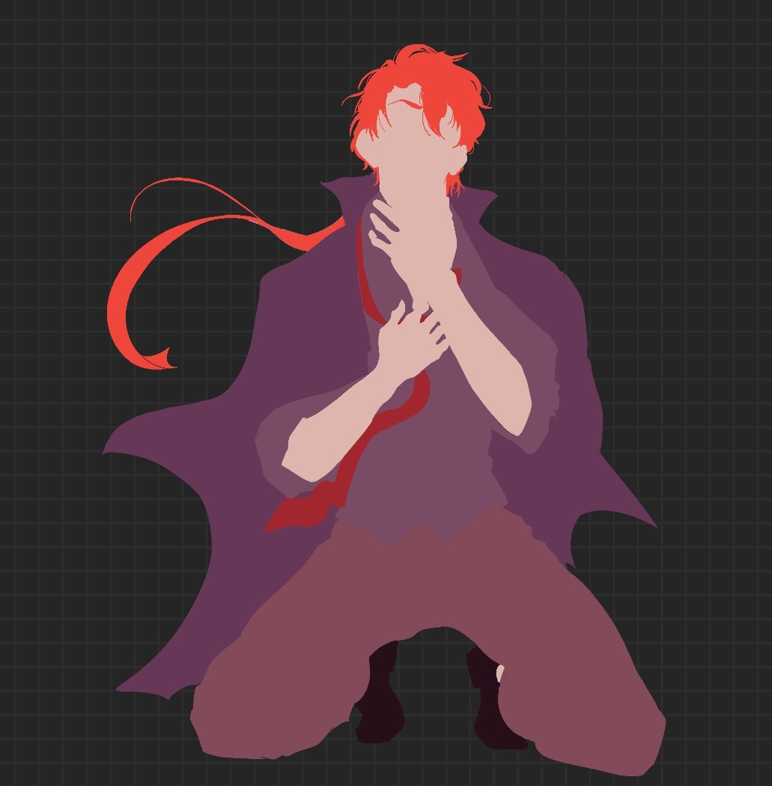
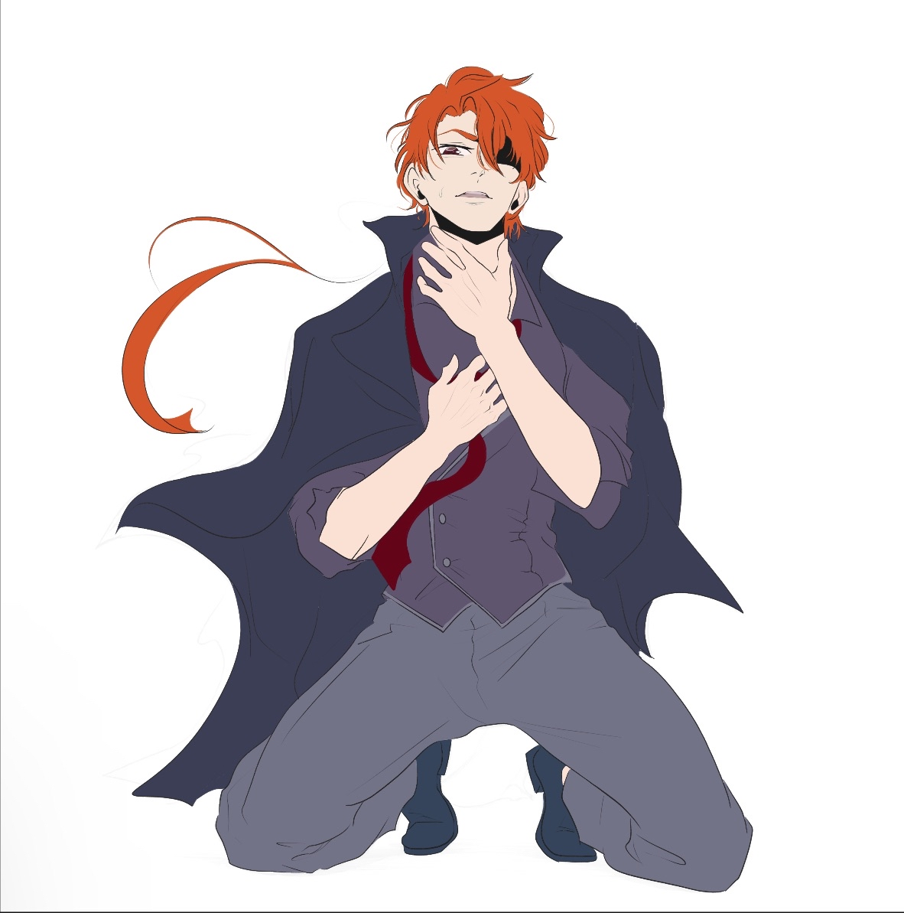
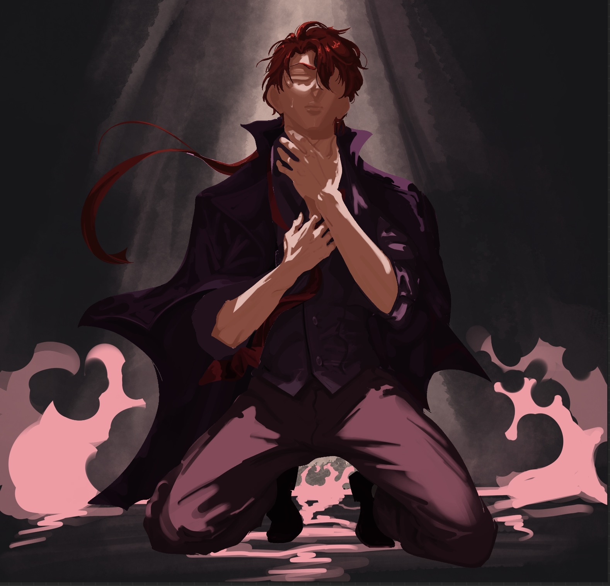
Original Character Illustrations — Sketches
A series of hand-drawn original character sketches that explore character design, expression, and visual storytelling. These pieces reflect my interest in personality-driven illustration and stylized anatomy.
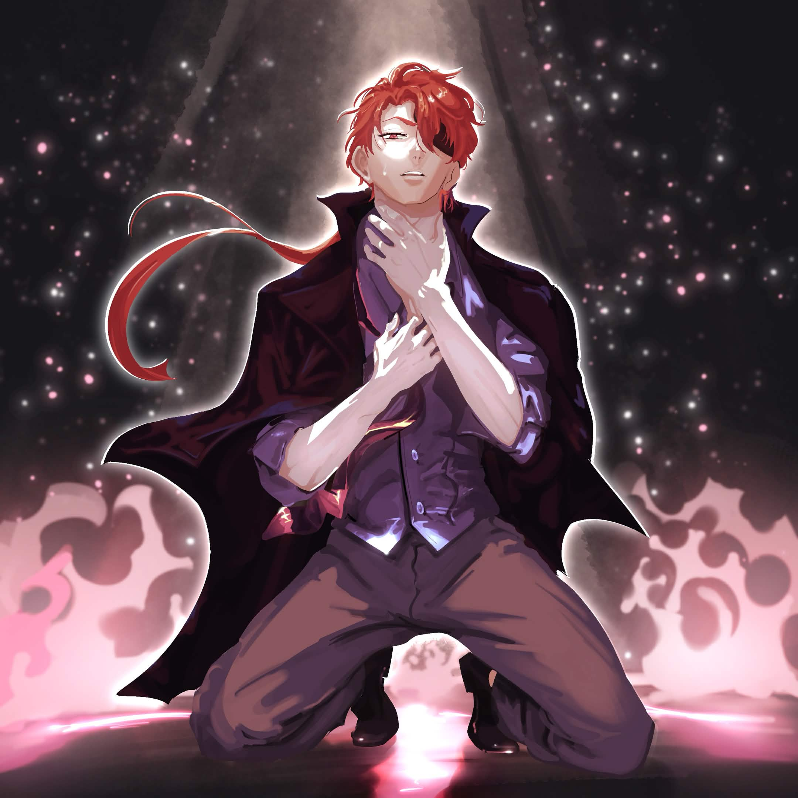
Original Character Illustrations — Finals
Finished versions of original character artworks, refined from initial sketches. These pieces reflect my interest in personality-driven illustration and stylized anatomy.
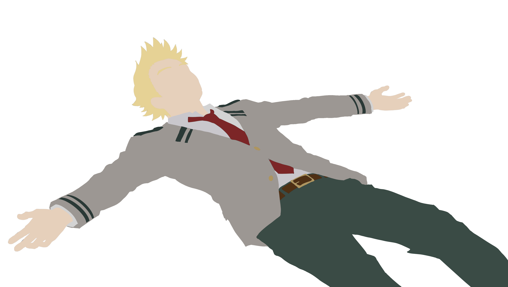

Mirio Togata Fan Art
A hand-drawn illustration of Mirio Togata that focuses on character likeness, pose, and expressive linework. This piece was created as fan art practice while refining anatomy and stylization.
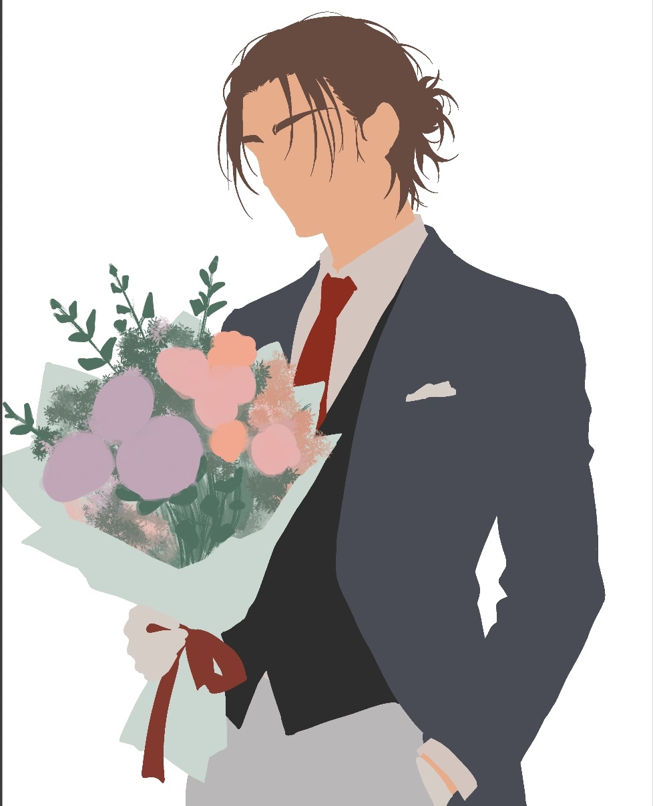

Eren Yeager Fan Art
A hand-drawn fan art piece of Eren Yeager exploring dramatic character presentation and stylized anatomy. This work focuses on recognizable features, pose, and mood.
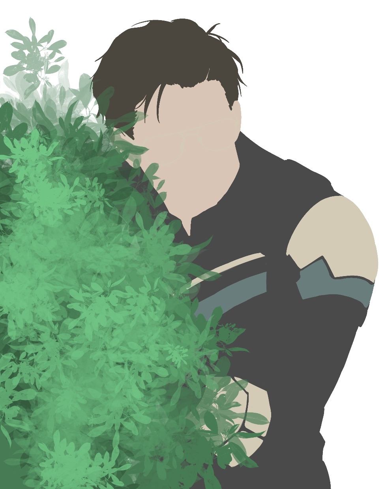

Adrian Chase Fan Art
A character illustration based on Adrian Chase, emphasizing attitude, likeness, and composition. This drawing reflects my interest in expressive fan art and character-focused visual storytelling.
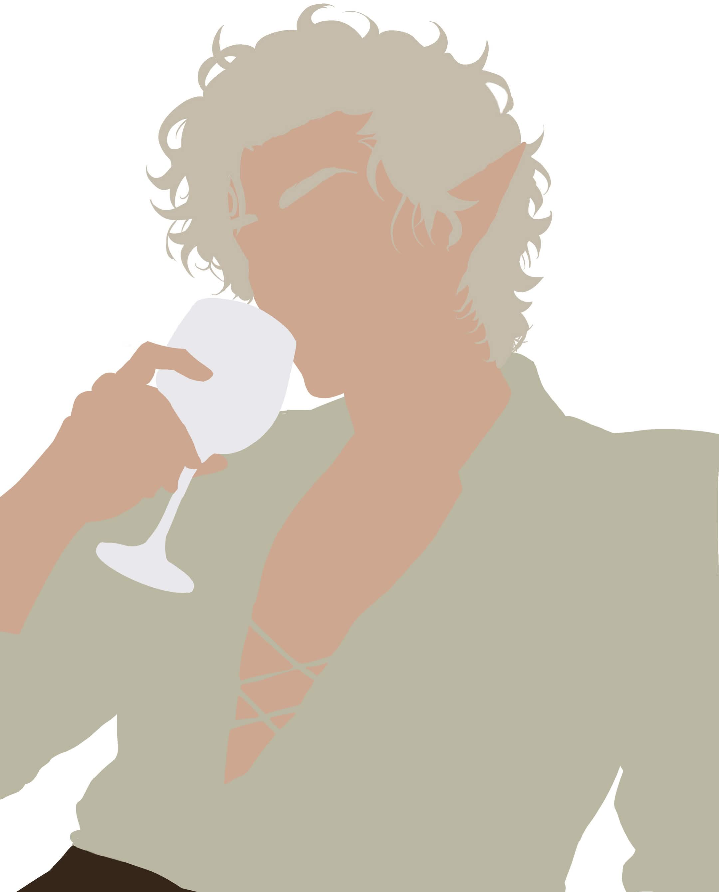
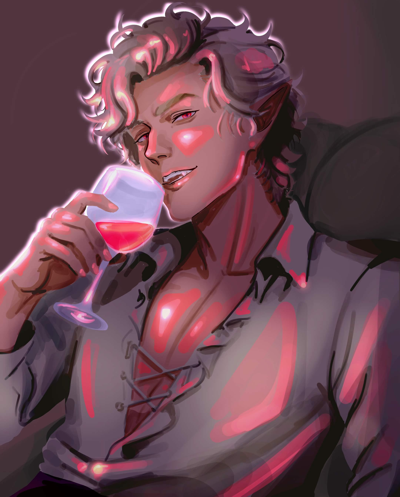
Astarion Fan Art
A hand-drawn fan art piece of Astarion focused on character likeness, expression, and mood. This illustration explores stylized portrait work and dramatic presentation inspired by fantasy character design.


Demon Transformation Animation
A pixel art animation of a girl transforming into a demon. This piece focuses on frame-by-frame motion, visual effects, and character transformation through stylized pixel work.